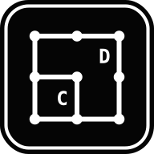

CONNECT THE DOTS
THE CLASSIC DOTS AND BOXES GAME · 1976 EDITION
CK MY APPS
▶ NEW GAME
TWO PLAYERS
VS COMPUTER
INSTRUCTIONS
SETTINGS
CONNECT TWO DOTS
Tap a dotted line between two dots. Complete a box to score and take another turn.
CLOSE